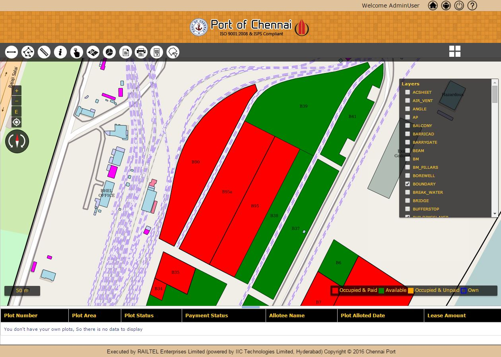
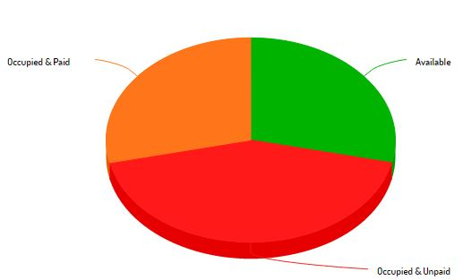
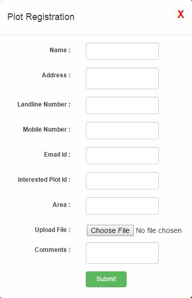
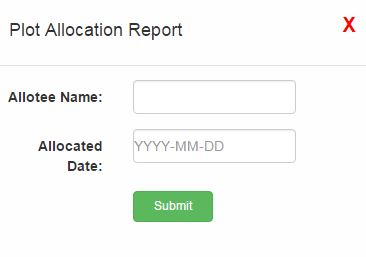
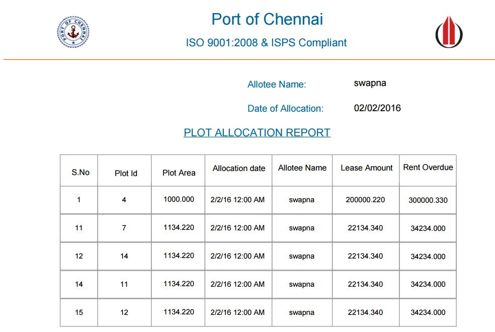

This Map page contains Layers to the Right of the screen and settings, Print Map, Plot Summary and Plot Registration on the main screen.
1.Click “Map Screen” in home page. Map Page is displayed.
Displays base map (osm) layer and other overlays on map. Map can display Bing map view also.
The user can check or uncheck the checkbox against the displayed layers in Layers tab. Accordingly, layers are visible or invisible on the main screen.
We can download the map screen of Base map (osm), Bing map and plots as image in the format of png.
It will show the plot summary report in pie chart. It contains the status of the plots.
| Available | Available plots indicates in Green color. |
| Occupied and paid | Booked plots indicates in Orange color. |
| Occupied and Unpaid | Booked and Unpaid plots indicates in Red color. |
We can download pie chart of the status in available formats of PNG, JPEG, PDF, SVG vector image.
Map screen contains GPS, Measure, Feature Info, Attribute Query, Spatial Query, Feature Selection, Fixed map Scale.
This GPS tool will shows our current location and displays latitude,longitude and accuracy in meters when we on the GPS.When we click on the marker button it zooms to the current location on map.
This measure tool is used for measuring.This measure tool supports two geometry types i.e, Area and Length.
1.Click “measure” and select the geometry type and the units as you need to calculate.
2.After that double click on the map and draw the polygon or line of particular area or length that you want to measure on a map.
The measurement details will displayed on a pop up window.
Note :1.While selecting the area there should be three minimum points to calculate.
Note :2.While selecting the length there should be two minimum points calculate.
1.Click on feature info and select the layer from the drop down menu.
2.Enable feature info icon.
3.Click on the respective layer feature on the map.
It displays the feature info of the respective layer in pop up.
1.Click on Attribute Query and select the layer and field from the drop down menu.
2.Give the required Id of your choice and submit.
It will zoom to the respective feature Id.
1.Click on spatial Query and select the layer from the drop down menu.
2.Enable point on map icon and keep a point on respective layer on map
3.Select the range and submit.
It will select the given range of Intersecting features.
1.Click on Feature Selection.
2.Enable Feature Selection icon.
Click on respective layer on a map to select a feature.
Description: The capability is to register the required plot(s).
1.Click “Plot Registration”. Plot Registration page is displayed.
2.Enter the details such as Name,Address,Mobile Number,Mobile Number,Email Id,Interested PlotId,Area,Uploaded FileName,Comments.
3.Click “Submit”.A confirmation message ‘plot is registered successfully’ is displayed.
Description: The capability is to displays the Plot Id,Plot Area,Allocation date,Leasee Name,Lease Amount,Rent Overdue details in a Plot Allocation Report.
1.Click “Plot Allocation Report”.Plot Allocation Report is displayed.
2.Enter the details of Allotee Name and Allocated Date in the form and click "submit".
Plot Allocation Report is generated and displayed as a report.
